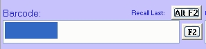
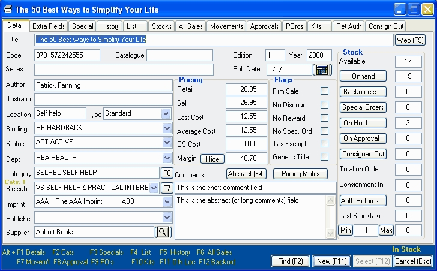
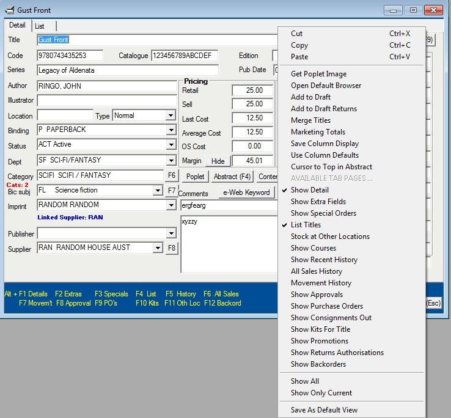

Viewing products
Products are stored in the master table with extra publishing information stored in the publisher table. They can be viewed in the Title Master window which can be opened in many places throughout the program:
| · | From the main menu: select Tables / Title Master.
|
| · | By using the 'house' icon on the toolbar:
|
| · | By using the F2 button in most windows in the program.
|
 |
The Title Master window has 16 tabs displaying different information about your products:

Main tabs
| · | Details - this tab contains most of the fields from the master file.
|
| · | Extra fields - less important fields from the master file.
|
| · | List - the list tab is a browser displaying all the titles in the master file.
|
Sales tabs
| · | Specials - lists all current special orders for the selected title.
|
| · | History - displays the monthly and weekly sales summaries.
|
| · | All Sales - shows a detailed listing of sales of the selected title.
|
| · | Approvals - shows all outstanding approvals for the selected title.
|
| · | Consignment out - shows all customers to whom you have consigned the selected title.
|
| · | Laybys - displays a list of customers who have laybys (retail configuration only).
|
| · | Backorders - displays a list of customers who have the title on backorder (distributor/ publisher configuration only).
|
| · | Promotions - shows a summary of all promotions that include the title.
|
Stock Control tabs
| · | Stocks - shows a stock summary for each of your stores.
|
| · | Movements - shows a detailed listing of the title's stock movements: goods inwards, returns to supplier etc.
|
| · | Purchase Orders - shows a detailed listing of all purchase orders for the title.
|
| · | Kits - displays the kits of which the title is a component. For kits themselves, it shows the kit's components.
|
| · | Returns authorisations - displays a list of customers who have the outstanding return authorisations for the selected title (distributor/ publisher configuration only).
|
Specialist tabs
| · | Courses - this view displays a summary of course adoptions for the title (Academic module only).
|
Displaying tabs
To open a tab (or close an open tab), use the right mouse to open the context menu and then select the required tab. Alternatively, use the shortcut keys listed at the bottom of the window. E.g. Alt F3 (i.e. hold the Alt button down and press the F3 function key) will open (or close) the Specials tab.

On each computer, you can save which tabs you want to open by default. With the window displaying only the tabs you want, and with the tab you want displayed first showing uppermost, use the right mouse to open the context menu and then select 'Save as default view'.
Important note: in previous versions, to speed up the opening of the title master, users were advised to only have a few tabs open by default. This is no longer necessary. When preparing your default setting, open all tabs that you use, just de-selecting those tabs that are not relevant to you. Then save your default setting.
Add a Title
Search for Titles
Delete a Title
|
|
The Title Master is split into different tabs or screens which display information about the title such as title, author and pricing information.
For more information on what are the tabs, what is contained on them and how to show different views click the link.